VERSION: December 2025
EdWorkingPaper No. 25-1372
The Effect of Four-Day School Week Adoption
on Teacher Retention and Sorting
As teacher shortages worsen across the U.S., many school districts have implemented a unique solution to attract
and retain effective teachers: switching from the traditional five-day school week to a four-day school week
(4DSW). I use 17 years of teacher-level employment data from Texas in a difference-in-differences analysis to
examine whether the 4DSW truly affects teacher retention and sorting across districts. I also introduce Google’s
PageRank algorithm as a revealed preference measure of school district attractiveness, ranking districts based on
how teachers change workplaces over time in a network analysis. I find that the 4DSW decreases turnover by 2.7
percentage points (p.p.). This effect drives a 5.2 percentile increase in the statewide attractiveness rank of
adopting districts, from the 39th to the 44th percentile. Districts with a four-day week also see a 5.1 p.p. increase
in the share of entering teachers coming from other districts, suggesting substitution away from first-time
teachers and those from outside the Texas public school system during hiring. However, the 4DSW causes no
change in measures of PageRank that capture attractiveness to teachers in othe
Suggested citation: Lawson, M. Cade. (2025). The Effect of Four-Day School Week Adoption on Teacher Retention and Sorting.
(EdWorkingPaper: 25-1372). Retrieved from Annenberg Institute at Brown University: https://doi.org/10.26300/h9gf-rs70
M. Cade Lawson
Georgia State University
The Effect of Four-Day School Week Adoption on Teacher
Retention and Sorting
M. Cade Lawson
∗
December 19, 2025
Abstract
As teacher shortages worsen across the U.S., many school districts have implemented a unique
solution to attract and retain effective teachers: switching from the traditional five-day school
week to a four-day school week (4DSW). I use 17 years of teacher-level employment data
from Texas in a difference-in-differences analysis to examine whether the 4DSW truly affects
teacher retention and sorting across districts. I also introduce Google’s PageRank algorithm
as a revealed preference measure of school district attractiveness, ranking districts based on
how teachers change workplaces over time in a network analysis. I find that the 4DSW
decreases turnover by 2.7 percentage points (p.p.). This effect drives a 5.2 percentile increase
in the statewide attractiveness rank of adopting districts, from the 39th to the 44th percentile.
Districts with a four-day week also see a 5.1 p.p. increase in the share of entering teachers
coming from other districts, suggesting substitution away from first-time teachers and those
from outside the Texas public school system during hiring. However, the 4DSW causes no
change in measures of PageRank that capture attractiveness to teachers in other districts, and
has no effect on the experience or education levels of incoming cohorts of teachers.
∗
Georgia State University (
email
: mlawson18@gsu.edu)
This material is based upon work supported by the National Science Foundation Graduate Research Fellowship
under Grant No. 1937956. Any opinion, findings, and conclusions or recommendations expressed in this material
are those of the authors(s) and do not necessarily reflect the views of the National Science Foundation. I thank
David Ribar, Keith Teltser, Lauren Hoehn-Velasco, Alex Bell, Jonathan Smith, Tim Sass, Dan Kreisman, Lindsey
Bullinger, Andrew Camp, and Alex Moran for valuable feedback on this work. I also thank participants at the
2025 Association for Education Finance and Policy Annual Conference and the 2025 Association for Public Policy
Analysis and Management Conference for helpful and constructive discussion.
1

1
Introduction
Teacher shortages have been a leading issue in U.S. education policy over the past decade, with the
falling supply and rising demand for educators frequently emerging as a concern in both academic
studies and the popular press (
Sutcher et al.
,
2016
). Despite these warnings, teacher shortages
have accelerated rapidly in the years since the COVID-19 pandemic (
Schmitt and DeCourcy
,
2022
). In 2024 alone, there were over 360,000 teachers working without full certification and
at least 41,000 teaching positions left completely unfilled across the U.S. (
Tan et al.
,
2024
). The
problem has become pervasive in both urban and rural communities (
Ingersoll and Tran
,
2023
;
Herman
,
2023
), posing a serious threat to the quality of education for K-12 students.
In response to worsening staffing challenges, school districts across the U.S. have turned to the
four-day school week (4DSW) in an attempt to recruit and retain teachers. In a traditional 4DSW,
students attend school four days per week and have the fifth day off. To compensate for the lost
day, which is often Monday or Friday, the remaining four days are generally lengthened to hold
total instructional time constant. While the first 4DSW dates back to at least the 1930s (
Donis-
Keller and Silvernail
,
2009
), adoption has grown substantially since the start of the 2000s: over
1,600 schools in 24 states had made the transition as of 2021, mainly in rural settings (
Thompson
et al.
,
2021
). Survey evidence suggests that the 4DSW is usually received positively by parents
and students (
Kilburn et al.
,
2021
).
While many districts explicitly cite staffing challenges as a reason for adopting the 4DSW
(
Barnes and McKenzie
,
2025
), others turn to the policy as a potential cost-cutting mechanism or
to improve in-school outcomes like attendance (
Thompson et al.
,
2021
). Recent evidence suggests
that the 4DSW has negative effects on student achievement (
Thompson
,
2021b
;
Thompson and
Schuna Jr
,
2022
;
Thompson and Ward
,
2022
;
Morton et al.
,
2024
) and generates only modest
cost savings (
Thompson
,
2021a
), but the literature on how the four-day calendar affects teacher
mobility has been slower to develop. Understanding whether district leaders are realizing the
recruitment benefits they hope for or trading off student achievement for no measurable gain is
an important policy issue.
In this paper, I use 17 years of teacher-level employment data from Texas in a difference-in-
differences analysis to show how the 4DSW affects teacher retention and sorting across school
districts. I also apply Google’s PageRank algorithm to quantify school district attractiveness,
ranking districts based on how teachers change workplaces over time in a network analysis. I
find that the 4DSW reduces teacher turnover by 2.7 percentage points (p.p.), a modest retention
effect from a pretreatment mean turnover rate of 23%. This retention effect drives a 5.2 percentile
increase in the statewide attractiveness rank of adopting districts, a rise from the 39th to the 44th
percentile. I also show that 4DSW districts see a 5 p.p. increase in the share of incoming teachers
2

coming from other districts, resulting in substitution away from first-time teachers and those
from outside the Texas public school system. Otherwise, I find no evidence that the 4DSW
affects whether or how outside teachers sort into a district. The 4DSW causes no change in
measures of PageRank that attempt to isolate attractiveness to teachers in other districts (i.e.
moving teachers), and has no effect on the experience or education levels of incoming cohorts of
teachers.
This paper contributes to the literature on 4DSW effects and also to the broader literature on
evaluating teacher recruitment policies. It does so in three ways. First, I provide early evidence
on how the 4DSW affects teacher mobility. A small but growing literature (discussed in the
following section) addresses the teacher retention and recruitment effects of the 4DSW, but results
have been mixed. I study a set of both existing and newly-defined measures of teacher mobility
to identify mobility effects as thoroughly as possible.
Second, I provide the first causal evidence on the effects of four-day school week adoption
from Texas. Over 180 districts (15%) enrolling 165,000 students had adopted a 4DSW as of
SY 2024-25, with at least 15 more announcing a switch in time for SY 2025-26 (
Adams
,
2025
).
Prior studies on the 4DSW have focused on early-adopting states like Colorado and Oregon,
which have had four-day school weeks for well over a decade. In contrast, over 95% of 4DSW
districts in Texas adopted the policy after the COVID-19 pandemic. Because the teacher labor
market has changed so much since the pandemic (
Camp et al.
,
2024
), estimates of 4DSW effects
on teacher mobility from before school year (SY) 2020-21 may be less applicable in today’s
education landscape than those from later-adopting settings like Texas. As such, results from this
work should be of value to school district leaders deciding whether to implement the policy in
the coming years.
Finally, I provide what I believe is the first application of the PageRank algorithm, invented
to order search results on Google, for quantifying school district attractiveness. There are very
few time-varying measures of how attractive schools and districts are to teachers, despite a long-
standing literature discussing the relationships between factors like working conditions or student
body composition and teacher mobility (
Hanushek et al.
,
2004
;
Horng
,
2009
). I demonstrate
that measures leveraging teachers’ revealed preferences for workplaces correlate with these struc-
tural determinants of attractiveness, but are flexible enough to respond to policy changes. I
emphasize that these measures, which have already been validated as useful proxies for private
firm attractiveness (
Sorkin
,
2018
), can be used to study mobility in the public sector using data
kept by many states. I introduce the PageRank algorithm in depth in the Methods section, with
a focus on explaining the mechanics intuitively so that future researchers can apply the method
in their own research.
3

The paper proceeds as follows. In Section 2, I provide additional background on the four-day
school week both nationally and in Texas. In Section 3, I introduce the data used in my analysis.
In Section 4, I introduce and motivate the PageRank algorithm. In Section 5, I describe my
quasi-experimental approach for studying the effect of 4DSW adoption. In Section 6, I present
and discuss my results. I conclude and discuss policy implications in Section 7.
2 Background
In this section, I discuss the existing literature relevant to this study and introduce the details
of the four-day school week in Texas. I begin with a broad look at the literature on teacher
recruitment and retention policies. I then introduce the literature on how the 4DSW affects first
mobility and then non-mobility outcomes before discussing how and where the policy has been
adopted in Texas.
2.1
Teacher Recruitment and Retention Policies
The negative effects of failing to recruit and retain effective teachers, including lower academic
achievement, have been well-documented (
Hanushek et al.
,
2016
;
Carver-Thomas and Darling-
Hammond
,
2017
;
Sorensen and Ladd
,
2020
). These costs, coupled with long-standing evidence
that teacher turnover is often driven by conditions inside schools rather than the overall supply
of teachers (
Ingersoll
,
2001
), has led districts to pilot a host of recruitment and retention policies
over the years. These include a set of both financial and non-financial incentives, of which the
4DSW is one.
Research finds that well-designed financial incentives can have large effects on turnover and
recruitment outcomes. Retention bonuses have been shown to reduce turnover by up to 17%
(
Clotfelter et al.
,
2008
), with some evidence suggesting that benefits concentrate among teachers
in tested subjects (
Springer et al.
,
2016
) and that schools offering bonuses see improved academic
performance for students (
Swain et al.
,
2019
). Prior work also finds that loan forgiveness can
reduce attrition by around 10% in hard-to-staff
subjects
(
Feng and Sass
,
2018
), but that similar
incentives are less effective in high-need
schools
(
Jacob et al.
,
2024
). In terms of recruitment,
even modest increases in wages have been shown to raise the average education level of recruited
teachers and generate additional downstream benefits for students (
Gjefsen
,
2020
).
Non-financial approaches to teacher retention, of which the 4DSW is one, have shown overall
positive results. So-called “induction” policies, which provide additional mentorship and support
for new teachers, generally find positive effects on teacher retention (
Ingersoll and Strong
,
2011
;
Ronfeldt and McQueen
,
2017
). There is also evidence that professional development programs
4

can boost retention among teachers (
Luesse et al.
,
2022
). However, there is relatively little work
documenting how non-financial policies like the 4DSW which implicitly aim to improve the
working conditions of teachers change retention and recruitment, despite evidence that working
conditions are predictive of attrition (
Geiger and Pivovarova
,
2018
).
2.2
Effects of the Four-Day School Week on Teacher Mobility
The desire to improve staffing outcomes is a commonly-cited reason for adopting the 4DSW
(
Barnes and McKenzie
,
2025
;
Camp et al.
,
2025
). In general, the literature breaks staffing effects
down into two categories: retention and recruitment. I discuss related findings in that order.
Evidence on whether the 4DSW affects teacher retention is mixed. A recent statewide study
from Colorado finds small negative or statistically insignificant effects of 4DSW adoption on
teacher retention (
Morton and Dewil
,
2024
). Similarly, in the context of Oregon,
Ainsworth
et al.
(
2024
) find that 4DSW adoption increases turnover for teachers but has no discernible
effect among nonteaching staff. Evidence from Arkansas suggests that 4DSW adoption reduces
turnover modestly (
Camp
,
2024
), while a study from Missouri finds null effects on retention
(
Camp et al.
,
2025
). While the direction of these effects varies by study, estimates are consistently
very small in magnitude. An important caveat is that most 4DSW districts studied so far are in
rural settings; the only evidence from a larger metropolitan district finds more substantial negative
effects on retention (
Nowak et al.
,
2023
). As such, the existing literature provides little support
for the idea that 4DSWs help districts retain teachers.
Studies examining the 4DSW’s effect on teacher recruitment paint a similar picture: effects
of differing directions but small magnitudes.
Morton and Dewil
(
2024
) use reliance on teachers
with a shortage credential as a proxy for recruitment, finding that the 4DSW increases the share
of teachers with a shortage credential by 0.11 percentage points. However,
Manion and Varkey
(
2021
) find that rural 4DSW-adopting districts have greater success filling teaching vacancies
with qualified candidates. A third study,
Camp et al.
(
2025
), finds no effect on adopting districts’
ability to hire new teachers.
2.3
Other Four-Day School Week Effects
The 4DSW has been shown to have important effects that extend far beyond teacher recruitment
and retention. These outcomes, which are often unintended “side-effects” of the policy, should
be considered alongside teacher-centered effects when making the decision to adopt the 4DSW.
Much of this literature relates to student achievement, where evidence is mixed but trending
negative in recent years. Earlier work finds modest positive gains in reading and math scores for
5

students in 4DSW districts (
Anderson and Walker
,
2015
) while more recent studies find larger de-
clines in performance, especially in non-rural schools and for female students (
Thompson
,
2021b
;
Thompson and Schuna Jr
,
2022
;
Morton et al.
,
2024
) that are often most pronounced in districts
that reduce total instructional hours when transitioning to the four-day model (
Thompson and
Ward
,
2022
).
In addition to recruitment, cost saving is frequently cited as a reason for adopting the 4DSW.
There have been a handful of studies addressing this question, with the 4DSW shown to cause
modest reductions in overall school expenditure driven by reductions to support services such
as personnel expenses, supplies, and materials (
Thompson
,
2021a
). 4DSW districts have also
been found to receive less in federal revenue while spending less overall, with results again driven
by cuts to support services and noninstructional support (
Morton
,
2021
). The 4DSW is often
associated with a variety of secondary non-academic effects such as increased crime among youth
(
Fischer and Argyle
,
2018
), decreased parental labor supply (
Ward
,
2019
), increased likelihood of
4DSW adoption by neighboring districts (
Anglum and Park
,
2021
), and lower rates of bullying
(
Morton
,
2023
).
2.4
The Four-Day School Week in Texas
Adoption of the 4DSW has been most common in rural districts, where teacher shortages are
generally thought to be the most severe (
Ingersoll and Tran
,
2023
), and Texas is no exception.
In the state of Texas, just over 97% of 4DSW districts are in rural communities or remote towns
as designated by the National Center for Education Statistics. The remaining 3% is comprised of
districts in medium or large suburban areas. In most cases, districts adopt the 4DSW by giving
all students and teachers a third day of the weekend on either Monday and Friday. Some districts
instead adopt a “hybrid” version of the 4DSW, where students generally attend school for some
four-day weeks and some five-day weeks based on the month of year. The growth of the 4DSW
has been exponential in Texas since the COVID-19 pandemic: the majority of districts which
have adopted the policy did so in during the 2023 and 2024 school years. I plot the growth of
the 4DSW across Texas districts in Figure
1
.
By the start of SY 2019-20, only 8 districts had adopted the 4DSW. By the time SY 2024-25
began, that number had risen to just over 180 – nearly 15% of all districts in the state, serving over
165,000 students. At least 15 more districts adopted some version of a 4DSW for SY 2025-26
(
Adams
,
2025
), with deliberations likely to begin soon for SY 2026-27 adopters. As of SY 2023-
24, the average 4DSW district was majority-white (55%) and 63% comprised of economically
disadvantaged students (
Priyanti et al.
,
2025
).
6
3
Data
I use teacher-level data obtained via a Freedom of Information Act (FOIA) request from the
Texas Education Agency (TEA) in this analysis. The TEA maintains a longitudinal database
containing every teacher in the state of Texas dating back to the 2006-07 school year, allowing
me to follow teachers across schools and districts over time. There are approximately 400,000
teachers in the state when considering both full-time and substitute teachers. The data contains a
rich set of information on each teacher, including place of employment, salary, supplemental pay,
years of tenure, years of experience, age, sex, full-time equivalent status, and subjects taught. The
granularity of this data allows me to calculate flows of teachers between districts year-over-year
so that I can estimate whether the 4DSW affects both retention and the composition of incoming
teacher cohorts in adopting districts. Data on each teacher’s experience level allows me to identify
first-time teachers who are new to the profession.
1
While the TEA provides annual teacher-level data, it does not track which districts have
adopted a 4DSW or the year in which each district adopted the policy. To identify 4DSW-
adopting districts in Texas, I leverage data collected by
Priyanti et al.
(
2025
) which lists the year of
adoption for each 4DSW district in the state.
2
I supplement this data with a hand-collected dataset
of my own, which I use to validate the starting year of the 4DSW in each district. I collected this
data by combining information from a series of teacher union websites, news articles (including
Adams
(
2025
)), and district press releases discussing the adoption of the four-day school week.
Whenever a source did not mention the year of adoption, I visited the district’s website or the
WayBack Machine and viewed past year calendars to determine the appropriate start date.
I compare the characteristics of teachers in four- vs. five-day school weeks in Texas in Table
1
, with an emphasis on the teachers who change places of work. A “mover” is any teacher who
changes districts from one year to the next. By comparing movers who enter 4DSW districts
(Column IV) to the full population of movers (Column II) and to movers entering rural districts
(Column III), one can see whether there systematic differences in the types of teachers who choose
to join 4DSW districts.
I focus on comparisons between teachers who move to any rural district (Column III) and
those who move to a 4DSW district (Column IV) because 4DSW adoption has predominantly
1
My primary analysis uses data from SY 2012 and onward due to availability of campus-level student enrollment
data and to ensure that events from much earlier in the panel, such as the Great Financial Crisis and general changes
in the teaching profession, are not picked up by district fixed effects. I also omit any districts which are not present
for the full sample period from my analysis, as such districts are expected to create noisy spikes in sorting and
retention outcomes after opening or closing.
2
Some districts adopt variants of the four-day week which have a combination of four- and five-day weeks or other
hybrid approaches. I combine pure four-day calendars and hybrid four-day calendars in my analysis, demonstrating
in a later robustness check that my results are not sensitive to the inclusion of hybrid districts.
7
occurred in rural Texas districts, making it a more natural and informative comparison than one
between 4DSW movers and the full population of movers. Compared to the sample of teachers
who move to any rural district, teachers who move to a 4DSW district are 2 percentage points
(p.p) more likely to hold an advanced degree (23% vs. 21%) and earn over $3,000 more during
their first year in the new district. Much of the earnings difference is driven by teacher experience,
which is higher among 4DSW movers than other rural movers (8.2 years vs. 6.7 years). I observe
just over 7,000 teachers entering 4DSW districts between SYs 2017-18 and 2024-25.
3.1
Measuring Teacher Mobility
Districts which adopt the 4DSW speculate that it can improve both retention and recruitment of
teachers. While there are intuitive ways to measure retention using administrative data, it is not
possible to cleanly define a true measure of recruitment without observing either vacancies or the
pool of applicants. However, I can identify changes in the composition of incoming cohorts of
teachers and other related outcomes. I refer to these as “sorting” measures, which can provide
evidence on how district teacher composition changes after adopting the 4DSW. I describe my
measures of retention and sorting in this section.
1.
Measures of Retention
My primary measure of teacher retention is a district’s turnover rate, defined as the percent of
teachers from year
t
who left the district before the next year
t
+ 1
. I am not able to observe
retention in the last year of my panel, SY 2025, because doing so requires data from the following
school year. This prevents me from studying retention outcomes in districts that adopt the 4DSW
for the first time during SY 2025.
2.
Measures of Teacher Sorting
To study whether the 4DSW changes the composition of teachers entering adopting districts, I
define a set of annual cohort-level measures for each district. I define a “cohort” as the set of
teachers who are new to the district in year
t
, and calculate the average characteristics of each
cohort year-over-year. My first set of cohort measures capture the average education level of
incoming teachers. These include the share of the cohort with an advanced degree
3
and the share
with no college degree.
I then define measures of where each new teacher comes from. Because I observe the work
location of every teacher along with their cumulative years of experience, I can identify three
types of incoming teachers: 1) teachers from other Texas public school districts, 2) first-time
3
Advanced degrees include master’s degrees and doctorate degrees.
8
teachers, and 3) teachers from alternate places (out-of-state, private schools, other sectors, etc.).
This allows me to define cohort-level shares of teachers who are new to the teaching profession,
4
the share who come from other districts in Texas,
5
and the share who come from any other place.
This allows me to test whether 4DSW districts substitute between types of teachers the policy is
adopted. I also test whether there are changes in the average experience level of incoming cohorts,
regardless of where the teachers are from.
Finally, I use year-over-year teacher flows to rank each district’s attractiveness to teachers. I
do so using the PageRank algorithm, which I introduce in depth in the following section. I use
each district’s rank as a proxy for that district’s own quality, which changes over time depending
on how many teachers move there and which districts they move from. I construct this measure
by identifying each teacher’s current and future district between any two years, summing the
total incoming and outgoing teachers moving between all pairs of districts in Texas, and applying
the PageRank algorithm to the resulting matrix of district-to-district flows. This results in an
annual measure of a school district’s attractiveness to teachers based on preferences revealed by
their movements over time.
3.2
Descriptive Statistics
I present descriptive statistics for each outcome of interest in Table
2
. Columns I and II compare
mean outcomes in 5DSW districts to those in 4DSW districts over the period ranging from SY
2018, when the first district adopted a 4DSW, to SY 2025. Columns III and IV report the
average outcomes in 4DSW the year before vs. the year after adopting the policy. The largest
differences between four- and five-day districts are in the reported percentile of attractiveness:
5DSW districts rank at the 51st percentile in a given year while 4DSW districts rank at the 43rd
percentile (i.e. are less attractive on average). First stage evidence from Columns III and IV reveal
few immediate pre-to-post differences in outcomes after adopting the 4DSW, including no change
in the student-teacher ratio and very moderate changes in the composition of incoming teachers.
4
I identify first-time teachers using their listed years of teaching experience. Texas Administrative Code 153.1021
mandates that districts track years of service for all teachers, whether they come from other Texas public school
systems or from “out-of-state private schools, foreign public and private institutions, the military, and colleges and
universities” (
Texas Office of the Secretary of State
,
2024
). As such, teachers listed with zero years of experience in
TEA data should correspond to new teachers entering the profession.
5
I designate all moving teachers for whom I cannot observe an origin or destination as “alternate pathway”
teachers. These are teachers who enter a district with greater than 0 years of experience but who were not teaching
anywhere in the Texas school system during the prior year, indicating that the teacher must have come out of
retirement, from a different state, from the private school system, or from another industry where their work was
counted as teaching experience.
9
4
Ranking Districts Using Revealed Preference
In this section, I introduce the PageRank algorithm and explain why it is applicable for ranking
school districts by their attractiveness to teachers. I introduce two separate measures of PageR-
ank: one which combines attractiveness to current teachers (i.e. consider direct retention) and
prospective teachers, and one which more cleanly isolates the district’s attractiveness to prospec-
tive teachers (i.e. omits direct retention). I then provide a simple example of how the algorithm
works and validate it using external data.
4.1
Measuring District Appeal Using PageRank
There are few, if any, time-varying measures of how attractive a school district is to teachers
(analogs to “firm quality” in the labor economics literature). Furthermore, common approaches
used to study the amenities in private firms do not translate well to the context of teacher labor
markets. For example, fixed pay schemes within school districts complicate hedonic approaches
(
Goldhaber et al.
,
2010
) while decentralized application processes for teaching jobs both within
and across states make application and vacancy-based measures difficult to construct.
6
This limits
the ability of researchers to study how policies like the 4DSW affect a district’s attractiveness
relative to other districts.
However, the teacher labor market is unique because data on where teachers work each year,
like the data used in this study, is often accessible to researchers. This makes it possible to con-
struct revealed preference measures of district attractiveness by following which districts are able
to attract the most teachers from other districts year-over-year. I accomplish this by ranking
each district using the PageRank algorithm, which (in simplest terms) ranks a district as being
“more attractive” if it (1) attracts more teachers from other school districts in Texas, and (2)
attracts teachers from districts that are themselves considered more attractive by the algorithm
(recursively).
The algorithm, which was developed to rank web pages returned in Google search results
(
Page et al.
,
1999
), has gained traction as a measure of firm quality since seminal work by
Sorkin
(
2018
). Other studies using mobility flows to study quality include
Bell et al.
(
2025
), who use
migration flows and a stylized version of PageRank to quantify the attractiveness of housing, and
Bagger and Lentz
(
2019
), who construct a “poaching index” based on the share of employees a
firm hires from other firms. Under the assumption that workers (teachers) move from lower-
to higher-quality firms (school districts), the algorithm leverages discrete revealed preferences to
6
For example, Texas divides the state into 20 regions which each maintain separate job listing pages. For more
information, see: https://tea.texas.gov/about-tea/other-services/education-service-centers/texas-educator-job-sites.
10
rank each district.
7
One can think of PageRank as a joint measure of recruitment and retention:
the best districts recruit teachers from other top districts and also lose fewer of their own teachers.
However, as I demonstrate later, one can make small changes to weight the results less towards
retention and more towards attractiveness to prospective teachers.
Estimating PageRank requires constructing a matrix that documents the flow of teachers
between each possible pair of districts, the transition matrix
T
.
T
is therefore an
n
×
n
matrix
where entry
(
i, j
)
is the number of teachers leaving district
j
for district
i
and entry
(
i, i
)
(the
diagonal) gives the number of teachers from
i
who stay in
i
(retention). Let
v
be the
n
×
1
column
vector containing the rank of
n
school districts.
v
is can be obtained from the following equation:
(
S
−
1
T
)
v
=
v
(1)
In Equation (1),
S
is an
n
×
n
diagonal matrix where entry
S
nn
is the total number of teachers
leaving district
n
.
8
S
−
1
M
is therefore a normalized transition matrix, where entry
(
i, j
)
is simply
the share of teachers leaving
j
who move to
i
.
9
I construct two measures of PageRank for each district. The first, which I call
P R
T otal
, is a
composite measure of a district’s ability to (1) retain its current teachers and (2) attract teachers
from other districts. The second, which I call
P R
T ransf er
, purges the direct effect of district
retention and instead ranks districts based on their attractiveness to teachers who move (i.e.
“transfer”). Because I separately study retention rates as an outcome, I present
P R
T ransf er
as
my preferred PageRank outcome and use
P R
T otal
as a robustness check on my retention results.
P R
T ransf er
more cleanly isolates how the 4DSW changes the attractiveness of a district to teachers
from other districts, but I caution that it is not possible to fully remove all retention effects from
measures of Transfer PageRank.
10
7
This assumption may be especially reasonable in the teacher labor market, where dismissals and layoffs are less
common than in the private sector (
U.S. Bureau of Labor Statistics
,
2025
).
8
In accordance with Equation (1), PageRank can be calculated using a number of methods. For example, it
can obtained by normalizing the principal eigenvector of
S
−
1
T
. It can also be obtained using power iteration by
initializing
v
as an
n
×
1
vector where each entry equals
1/
n
and iteratively updating
v
to the value
v
′
= (
S
−
1
T
)
v
until
||
v
′
−
v
||
< ϵ
for some pre-determined threshold
ϵ
that indicates sufficient convergence. I implement PageRank
using the R package
igraph
.
9
PageRank has one parameter, called a damping factor. I set the damping factor to 0.85 in my analyses, which
is the standard value across the PageRank literature. In cases with “dangling nodes” (when a district has no teachers
outgoing to other districts in a year), I follow the convention of initializing all outflows for that district-year to
1/
N
where
N
is the total number of districts.
10
While the
P R
T ransf er
approach removes the
direct
effect of retention from the final ranking, it is not guaranteed
to purge
indirect
retention effects. Because changes in the retention rate can implicitly affect the off-diagonal entries
in the transition matrix
T
,
P R
T ransf er
cannot be interpreted as a pure “recruitment” effect. For example, imagine
the 4DSW causes retention to increase to
100
% in district
i
at a time when all teaching positions are filled. This
mechanically forces all entries in both row
i
(teachers incoming to
i
) and column
i
(teachers outgoing from
i
) to
11
4.2
A Simple Example
In this section, I provide a simple example of how the PageRank algorithm ranks three hypothet-
ical districts: District H (for “High Quality”), District M (for “Medium Quality”), and District
L (for “Low Quality”). To build intuition, I demonstrate how to calculate
P R
T otal
(the compos-
ite measure of retention and attractiveness). Estimating
P R
T ransf er
follows the same procedure,
but requires zeroing out the diagonal of
T
before calculating
S
.
Between two school years, teachers in the three districts make the following decisions:
•
District H
: 12 stay, 2 move to
District M
, 1 moves to
District L
.
•
District M
: 10 stay, 4 move to
District H
, 2 move to
District L
.
•
District L
: 10 stay, 4 move to
District M
, 1 move to
District H
.
Using this information we can construct the transition matrix
T
, whose rows represent destina-
tion districts and columns represent origin districts.
T
takes the following form:
T
=
stay in
H
M
→
H
L
→
H
H
→
M
stay in
M
L
→
M
H
→
L
M
→
L
stay in
L
=
12
4
1
2
10
4
1
2
10
To construct the matrix
S
, which normalizes the transition matrix by the number of total teachers
originally in the origin district (i.e. calculates the share of teachers moving from the origin district
to each possible destination), one simply sums each column of
T
into a diagonal
3
×
3
matrix
where entry
{
1
,
1
}
corresponds to the total for District H,
{
2
,
2
}
corresponds to District M, and
{
3
,
3
}
corresponds to District L:
S
=
15
0
0
0
16
0
0
0
15
=
⇒
S
−
1
=
1
15
0
0
0
1
16
0
0
0
1
15
The operation
S
−
1
T
then gives a matrix whose diagonal represents the retention rate of each
district, and whose off-diagonal entry
{
i, j
}
represents the share of teachers from district
j
moving
to district
i
. As such, the columns sum to
1
: every teacher either stays in the same district or
moves to another one.
S
−
1
T
=
0
.
80 0
.
25 0
.
07
0
.
13 0
.
63 0
.
27
0
.
07 0
.
13 0
.
67
zero, since there are no incoming or outgoing teachers. This pushes the district’s
P R
T ransf er
rank downward.
12
Taking Column 1 as an example, we see that the high-quality district
H
retained 80% of its
teachers, lost 13% to district
M
, and lost 7% to district
L
. Row 1 tells us where District
H
’s
teachers came from: it drew in 25% of District
M
’s teachers and 7% of District L’s teachers.
Finally, we solve for
v
in from Equation (1) and obtain the following PageRanks:
District H
District M
District L
0.47
0.32
0.21
The algorithm produces the following ranking:
H > M > L
. Note that the retention rate of
the low-quality district
L
is higher than that of the medium-quality district
M
(67% vs. 63%).
Even though
M
loses a higher share of its teachers than
L
, the algorithm picks up that teachers
from
M
move up to
H
while teachers from
L
move up to
M
and replace them, producing an
intuitive quality ranking.
4.3
Validating the PageRank Measure
Because PageRank is indirectly a function of total teacher inflows, a relevant concern is that it
may be too heavily biased in favor of larger districts and therefore not a useful measure in smaller
districts like those that adopt the 4DSW. I plot the PageRank percentile of each 4DSW district in
Figure
2
. This exercise reveals that 4DSW districts are highly dispersed in their estimated PageR-
anks, despite being nearly 100% rural: their ranks range from the 3rd to the 90th percentile.
Even small districts have a chance to appear high in the rankings, depending on the quality of
districts they draw teachers from.
Another concern is that estimating PageRank
annually
will result in estimates that are too
noisy to be useful for inference, since smaller districts may have only a few teachers entering
and leaving per year. To test the relevance of PageRank estimated using just one year of teacher
mobility data, I estimate two versions of PageRank for each district: a single-year version, calcu-
lated by following teacher moves between SY 2023-24 and SY 2024-25, and a cumulative version
which sums teacher inflows and outflows across all years before estimating PageRank. The for-
mer version mirrors the method used in my main analysis, which calculates PageRank annually
tracks changes year-over-year. The latter is designed to produce a more “stable” and less noisy
estimate, since it aggregates inflows and outflows over a full 13 years. I then regress each version
of PageRank on a set of proxies for district attractiveness such as average salary, total enrollment,
student demographics, and the district’s state accountability score. I plot the resulting elasticities
and semi-elasticities in Figure
3
.
The results are intuitive: both 2025 PageRank and cumulative SY 2012 - SY 2025 PageRank
correlate negatively with the share of English Language Learners and economically disadvantaged
13
students, consistent with findings that teachers sort out of lower-income schools and into higher-
income ones (
Hanushek et al.
,
2004
;
Bonesrønning et al.
,
2005
;
Simon and Johnson
,
2015
). The
negative coefficient on
log
(
Average Salary
)
is consistent with the compensating differentials paid
for poorer working conditions, while the coefficient on
log
(
Enrollment
)
is strong and positive.
This likely reflects that larger districts are more “central” to the network, in the sense that they
hire from a larger set of districts during a given year to fill a larger number of vacancies. Inter-
estingly, the coefficient on the
log
(
AccountabilityScore
)
is small and negative: a district’s rank
decreases modestly as its 0-100 state accountability score (in 2025) increases.
Importantly, the coefficients are similar in magnitude whether they are estimated based off
of the 1-year PageRank measure (shown in black) or the 13-year measure (shown in red). This
suggests that PageRank can provide a reliable signal of district attractiveness even when it is
estimated using a single year’s worth of mobility data.
5 Methods
5.1
Identification Strategy
My identifying variation comes from the staggered adoption of 4DSW policies across time and
districts in Texas. As of SY 2024-25, 181 school districts in Texas (15%) had adopted the 4DSW
since the first adoptee in SY 2017-18. The staggered nature of the rollout (see Figure
1
) re-
quires the use of a generalized difference-in-differences estimator of the
Callaway and Sant’Anna
(
2021
) (“C&S”) or
De Chaisemartin and d’Haultfoeuille
(
2020
) (“D&H”) variety. My primary
specification uses the C&S approach.
My primary analyses are conducted at the district level. In my preferred specification, I use
all rural school districts that are either never-treated and not-yet-treated as a control group for
rural 4DSW districts. In addition to being a more natural comparison group for 4DSW districts,
of which 97% are rural themselves, this approach generally results in better evidence for the
standard parallel trends assumption. However, I present results using the full set of rural and
non-rural districts as a control group as a robustness check.
11
I restrict my analysis to school
districts which existed for all 18 years of my panel, which excludes any district that merged with
another district or was dissolved, leaving 1,137 districts. Only one 4DSW district is dropped for
this reason, having merged with a nearby district before SY 2024-25.
For my estimates to be considered causal, this approach assumes that outcomes for treated
units (districts) would have trended the same way as outcomes for untreated units had they never
11
I code any district listed as “rural” or “town” by the National Center for Education Statistics (NCES) as a rural
district. The five non-rural 4DSW districts in Texas are identified as suburban by the NCES.
14

received treatment. I evaluate the plausibility of this assumption using event studies to provide
evidence that pre-trends were parallel between treated and control units. I do so for each outcome
I study.
The C&S estimator also requires the “no anticipation” assumption that teachers were not
able to select into or out of districts in expectation of future 4DSW adoption – in other words,
that districts in baseline period
t
−
1
from date of 4DSW adoption are truly untreated. The plau-
sibility of this assumption is different across my retention and sorting analyses. Because districts
announce the transition to a 4DSW well before the academic year begins, teachers currently em-
ployed in the district during year
t
−
1
will have the opportunity to react. They are “partially
treated” by the news of the policy, which affects their retention in
t
−
1
before they even ex-
perience the 4DSW in period
t
. To account for this, I allow for one pre-treatment anticipation
period in retention analyses using the approach in
Callaway and Sant’Anna
(
2021
).
My sorting analyses are less susceptible to this issue. These analyses measure the composition
of incoming cohorts of teachers, who are employed elsewhere in
t
−
1
. Their behavior is therefore
unable to contaminate the
t
−
1
outcome in the district they will relocate to in period
t
, even if
they hear about the policy. Anticipation in this setting would require the district announced the
4DSW over a year ahead of time, giving teachers in other districts time to adjust their employment
before the policy takes effect. In simpler terms, retention is measured at the end of the school
year while sorting (such as the average experience level of an incoming cohort of teachers) is
measured at the beginning of the school year. This makes anticipation plausible for retention-
related outcomes, but less plausible for sorting-related ones.
I outline the formal structure of the C&S estimator in Equation (2). Treated units are districts
which have adopted the 4DSW in year
t
; control units are rural districts which never adopt or
are yet to adopt as of year
t
. The C&S procedure estimates group-time average treatments on the
treated (ATTs), where “group” (
g
) refer to the year of first adoption of the 4DSW in a district.
Estimation of these group-time ATTs, which are then aggregated to a single population-level ATT,
is implicitly conducted by running the regression given in Equation (2), adapted from
Callaway
and Sant’Anna
(
2021
), using only district observations from years
t
and
g
−
1
for districts which
are either not treated (control) or first treated in
g
:
Y
1
=
γ
g,t
1
+
γ
g,t
2
G
g
+
γ
g,t
3
T
+
β
g,t
(
G
g
×
T
) +
ϵ
g,t
(2)
In the above,
G
g
is an indicator for whether an observation corresponds to a 4DSW district
which first adopts in period
g
and
T
is an indicator variable equal to
1
only in time
t
. The
parameter
β
g,t
gives the group-time ATT for districts first treated in period g during time
t
,
henceforth referred to as
AT T
g,t
.
Y
1
is the outcome of interest. Each
AT T
g,t
is then summed
15
with accompanying weight
w
g,t
which corresponds to the size of group g, effectively granting
years with more first-time adopting school districts more influence over the population-level
ATT (which I call
DID
CS
). I cluster standard errors at the district level. Because nearly all
4DSW districts adopt the policy late in the panel (from SY 2021-22 onward, with the modal
year of adoption being SY 2023-24), I bin the endpoints in all event study figures after 2 years
post-treatment.
6 Results
6.1
District PageRank
I first discuss the effect of 4DSW adoption on a school district’s place in the PageRank distribu-
tion. I estimate effects of adoption on both Total PageRank (
P R
T otal
, which includes both direct
retention effects and effects on attractiveness to prospective teachers) and Transfer PageRank
(
P R
T ransf er
, which removes direct retention effects and more cleanly isolates the attractiveness
of the district to prospective teachers). Because PageRank is unitless, I focus my discussion on
how the 4DSW changes each district’s PageRank
percentile
among all Texas districts rather than
its raw PageRank value.
12
I present the estimated effects in Table
3
.
I find that the 4DSW has a modest effect on a district’s Total PageRank but no detectable
effect on its Transfer PageRank. Compared to other rural districts, those that adopt a 4DSW
see increases of just over 5 percentile points in the statewide Total PageRank distribution – from
the 39th percentile pre-4DSW to the 44th percentile post-4DSW, on average. However, districts
only improve by an imprecisely-estimated 1.9 percentiles in the Transfer PageRank distribution
after adopting the policy. The estimated effect on raw Transfer PageRank is similarly modest,
with an increase of 0.001 in Transfer PageRank corresponding a roughly 2% increase from the
pretreatment mean. However, the 95% confidence interval for Transfer PageRank effects is not
able to rule out modest increases of up to 4.9 percentiles.
I present event study estimates of the effect of 4DSW adoption on a district’s PageRank
percentile in Figure
4
. While it does appear that the largest effect on Total PageRank comes in
the third year of the policy, there is little evidence that treatment effects evolve much over the
first few years. However, the recency of 4DSW adoption for most Texas districts prevents me
from studying effects over longer time horizons.
12
While analyzing PageRank percentile is useful for interpretability, it may also throw out valuable information
contained in raw PageRank because PageRank percentile is ordinal while raw PageRank is both ordinal and cardinal.
As such, it could be the case that the policy materially improves the raw PageRank of adopting districts but not
enough to increase their percentile by much (since the gaps in underlying PageRank between any two percentiles
could be quite large). For readability of coefficients, I scale raw PageRank by 100 in all models.
16
Taken together, these results suggest that districts adopting the 4DSW see increases in at-
tractiveness that are largely driven by improved retention of their own teachers rather than
heightened ability to draw in transfer teachers from other high-quality districts. I return to
this distinction in subsequent analyses of teacher retention and sorting across districts.
6.2
Teacher Retention
I now analyze the effect of the 4DSW on teacher turnover in adopting districts. As discussed
previously, my retention results allow for anticipation effects during period
t
−
1
since current
teachers get to make employment decisions during
t
−
1
before the policy is fully enacted. I present
the results of this analysis in Table
4
, which displays the estimated effect of 4DSW adoption on
districts’ annual turnover rates.
Row (I) contains the results of my preferred specification, which compares turnover in rural
4DSW districts to never- and not-yet-treated rural districts. I find that the 4DSW reduces teacher
turnover by 2.7 percentage points (p.p.), a decrease of 11.7% from the pretreatment mean of
23%. While this effect is detectable, it is relatively modest in magnitude. A small retention boost
follows intuitively from my earlier finding that adopting districts see increases in their Total
PageRank, which captures direct retention effects.
I present corresponding event study estimates in Figure
6
.
13
Stronger retention effects seem
to develop during the second school year after the policy is implemented. This evolution over
time could be consistent with teachers who prefer a 5DSW sorting out before or during the first
year, muting the retention effect in that year.
My retention results are robust to a number of additional checks. In Row (II), I estimate the
effect of 4DSW adoption on adopting districts using all never- and not-yet-treated districts as a
control group (rather than just rural 4DSW and non-4DSW districts). The point estimate does
not change but becomes slightly more precise with the additional sample included.
A possible concern for a difference-in-differences strategy with a treatment affecting smaller
rural districts and an outcome reliant on teachers moving between districts is the possibility of
spatial spillovers between treatment and control units. If there is a regional component to teacher
labor markets, it is possible that 4DSW adoption in one district may affect the turnover rate of
both that district and its neighbors. For example, imagine a 4DSW is attractive enough that it
both reduces turnover in the adopting district and increases it in neighboring districts as teachers
move into the adopting district. This spillover from treated to untreated units would constitute a
stable unit treatment value assumption (SUTVA) violation and bias the estimated 4DSW effect.
13
Because the majority of 4DSW districts adopted the policy over the past 2 years, I display event study coefficients
for up to 3 years post treatment to avoid noisy distant effects estimated off of very few early-adopting districts.
17
To address this possibility, I conduct a supplementary analysis that uses only rural districts that
are never adjacent to a 4DSW district (i.e. always at least 1 district away from a 4DSW district)
as a control group. I present these results in Row (III) of Table
4
and find that the coefficient
increases slightly, from 2.7 p.p. to 3.1 p.p. This provides suggestive evidence that spatial spillover
effects are not driving my results.
Finally, I test whether results differ based on the type of 4DSW calendar implemented. While
most districts institute a “full” 4DSW where every instructional week has only 4 school days,
some districts implement “hybrid” versions of the 4DSW with various changes made to the
calendar. For example, a district may have a four-day week every other week or only for the
middle portion of the school year. In Row (IV) of Table
4
, I test this by dropping all districts
with a hybrid calendar from the treatment group. The estimated effect is nearly the same as in
the pooled model, suggesting that there are few differences for districts with a pure vs. hybrid
4DSW calendar.
I note that not allowing for a one-year anticipation period attenuates the estimated retention
effect to a 1.4 p.p. decrease in turnover (not statistically significant), with a 95% confidence in-
terval ranging from a 3.4 p.p. decrease to a 0.7 p.p. increase. However, this approach confounds
the announcement of the policy with the policy’s true effect and results in bias with an unknown
sign.
14
Assuming the policy truly decreases retention, attenuation of the estimate suggests that
turnover could also be decreasing modestly during the announcement period
t
−
1
. However, I
am not able to test this theory rigorously.
As a final robustness check, I also conduct my retention analysis at the teacher level and find
effects of similar magnitude to my main district-level specification. I discuss this approach and
associated results in Appendix A1.
6.3
Teacher Sorting
Finally, I discuss my results on outcomes related to teacher sorting and the average characteristics
of incoming teachers. I find limited evidence that the 4DSW materially changes the characteristics
of recruited cohorts of teachers. In Table
5
, I report the point estimates and corresponding
95% confidence intervals for each of my sorting-related outcomes: those that track the average
composition of recruited cohorts, and those that track other district-level metrics.
15
.
14
For example, if the announcement causes more teachers to leave than to stay (i.e. turnover increases), the effect
will be biased because
t
−
1
will have an artificially high turnover rate to compare subsequent periods against. If true
4DSW effects reduce turnover, this would bias the estimate upward; if the 4DSW increases turnover, it would bias
the effect downward.
15
Results reported in Table
5
use the full set of never- and not-yet-treated rural districts as control units. As
a robustness check, I demonstrate that my results are quantitatively similar when using the full set of rural and
18
My results reveal a small degree of substitution between types of incoming teachers after
adopting the 4DSW. Adopting districts recruit cohorts that are 5.1 p.p. more heavily comprised
of teachers from other public school districts in Texas, substituting away from first-time teachers
and teachers from alternate pathways. This effect is intuitive given the prior finding that 4DSW
districts experience only small (statistically insignificant) increases in Transfer PageRank, which
approximately measures the attractiveness of the district among teachers who move. The policy
induces more hiring from other school districts, but not enough to move the needle on Transfer
PageRank substantially. This could be because the 5.1 p.p. increase in cohort composition alone
is not enough to mvoe a district up in the rankings, or because the teachers included in that
increase are not coming from notably more attractive districts.
Incoming cohorts in 4DSW districts are no more experienced on average than recruited co-
horts in other rural non-4DSW districts. Together with the result that 4DSW districts recruit
more heavily from other districts, this may imply a modest recruitment boost for 4DSW districts:
Giersch and Dong
(
2018
) find that principals prefer to hire teachers with some prior experience
(extensive margin), but that their preferences over levels of experience are less strong (intensive
margin).
However,
Giersch and Dong
(
2018
) also find that principals prefer more educated candidates.
I find relatively precise null effects on the share of incoming cohorts holding an advanced degree
(a 1 p.p decrease, with a 95% confidence interval ranging from effects of -4 p.p. to 2 p.p.) and the
share of incoming cohorts with no college degree at all (a 0.4 p.p. decrease). This implies that
4DSW districts recruit cohorts with similar education levels to those of rural 5DSW districts,
though I do not observe other important proxies for teacher effectiveness such as the quality of
a teacher’s undergraduate institution or their value-added that may be more informative.
Lastly, I find no significant change in the student-teacher ratio of districts that adopt a 4DSW.
The point estimate suggests that student-teacher ratios fall by 0.06 after adopting the policy,
a decrease of just 0.5% from the pretreatment mean of 10.9 students per teacher. The 95%
confidence interval once again rules out economically meaningful effects: possible effects range
from a 4.2% decrease to a 3.1% increase in a district’s student-teacher ratio. While I do not
observe data on vacancies in a district, meaningful changes in the student-teacher ratio could
suggest that districts are able to fill previously unstaffed positions or create new ones. I find no
evidence of movement along this dimension.
In summary, I find limited evidence that the 4DSW meaningfully changes how teachers sort
across districts. While adopting districts do see a modest increase in the share of incoming cohorts
coming from other districts, the change is not substantial enough to show up in the estimated
non-rural never- and not-yet-treated units in Appendix Table A1
19

attractiveness rank of the district. I find precise null results on all other measures of teacher
sorting, including the shares of cohorts by education level and the cohorts’ average experience
level. I present the event study estimates for each sorting outcome in Figure
6
. These provide
evidence for parallel trends between treatment and control units in each analysis, but reveal little
evidence of notable treatment effect evolution over time. I also conduct the same two robustness
checks for these outcomes as I did in my retention analysis: (1) omitting all hybrid 4DSW districts
and (2) omitting any control districts that are ever adjacent to a 4DSW district. I present the
results of these analyses in Appendix Table 2. The mainline results do not change at all: 4DSW
districts recruit cohorts of teachers more heavily comprised of teachers from other districts, but
see no change in any other sorting outcome.
6.4
Differences by Year of Adoption
In this section, I discuss patterns in 4DSW effects by year of first adoption. There are two main
reasons that cohort-level heterogeneity is of interest in this setting. First, there are substantial
differences in the size of adoption cohorts. For example, the SY 2018 cohort of adopters includes
just 2 districts while the SY 2024 cohort includes 94 districts. Second, some cohorts adopted the
policy during the COVID-19 pandemic, while others adopted it either before or after. There
could be differences in either the overall effect of the policy or the evolution of effects over time
across these cohorts. I present cohort-level treatment effects in Figure
7
.
Panels (h) and (i) of Figure
7
show effects of 4DSW adoption on Transfer PageRank and Total
PageRank, respectively. There are virtually no differences across cohorts in a district’s Transfer
PageRank, but the strongest effects on Total PageRank appear for the SY 2020 - SY 2023 cohorts.
The very small effects for SY 2024 and SY 2025 adopters is intuitive, given that Total PageRank is
driven by retention effects that take a couple of years post-adoption to develop. This pattern also
appears in Panel (j), which displays 4DSW effects on district turnover rates. Estimated effects
for each cohort are negative, with the exception of the SY 2018 cohort (comprised of just 2
districts) and the SY 2024 cohort (for which retention effects can only be estimated for the year
of adoption). Districts that adopted the policy earlier have larger turnover reduction, driven by
downward pressure on turnover rates in years 2+ after the 4DSW is implemented.
Cohort-level effects are generally consistent across other outcomes, with the occasional ex-
ception of the small early-adopting SY 2018 and SY 2020 cohorts. Point estimates for the share
of teachers coming from other districts are consistently positive across all post-2021 cohorts, and
cohort-level effects on the education level of recruited teachers are very similar. Overall, the
cohort-level analyses do not suggest that my results are systematically driven by potentially non-
representative groups such as the first adopters or the districts that adopted the 4DSW during the
20

COVID-19 pandemic (SY 2021 cohort).
7 Discussion & Conclusions
With educator shortages worsening across the U.S., many school districts – especially those in
rural areas – have employed creative approaches to attract and keep qualified teachers. I evaluate
the effects of one such policy, the four-day school week, on outcomes related to teacher retention
and sorting. I find that the 4DSW decreases turnover in adopting districts by 2.7 percentage
points, a modest fall from 23% turnover annually pre-4DSW to around 20% annually after
implementing the policy. While the effect is statistically significant, the magnitude is quite small.
That said, my estimated retention effects are larger than those found in prior studies such as
(
Camp
,
2024
) and (
Camp et al.
,
2025
). This emphasizes the importance of studying the policy
in diverse contexts, as effects increasingly appear to vary both by state and over time.
Districts adopting a 4SDW also see their attractiveness rank, as measured by the PageRank
algorithm, increase by just over 5 percentiles after adopting the policy. However, this is driven
almost entirely by the direct retention effect discussed previously: measures of rank that account
for the district’s attractiveness to teachers
outside
the district show no detectable change after the
policy is enacted. However, 4DSW districts recruit cohorts of teachers that are over 5 percent-
age points more heavily-comprised of teachers from other districts. This suggests that 4DSW
districts substitute away from first-time teachers and teachers from sources outside the public
school system after adopting the policy, though the effect is subtle.
While I describe my estimated effects as small, it is worth noting that it can be costly to
generate even modest retention effects using financial incentives. For example, (
Clotfelter et al.
,
2008
) find that $1,800 retention bonuses – equal to around 4% of a teacher’s salary – resulted
in a 5 p.p. decrease in turnover, implying a cost of nearly $36,000 per retained teacher. Such
policies may be difficult to implement in settings like the 4DSW districts of rural Texas, which
are often financially-constrained. In contrast, the 4DSW is free to implement and has also been
found to generate modest cost savings in implementing districts (
Thompson
,
2021a
).
However, the low monetary cost of the 4DSW is offset at least partially by high opportunity
costs incurred by students. The most recent evidence suggests that students in 4DSW districts
perform worse, with estimated losses ranging from to 5% to 9% of a standard deviation (
Morton
et al.
,
2024
;
Thompson and Schuna Jr
,
2022
). To contextualize these declines, 5 - 9% of a
standard deviation is roughly the difference in effectiveness between a rookie teacher and one
with 5 years of experience (
Papay and Kraft
,
2015
). A tradeoff between improving retention
rates by just under 3 p.p. and achievement losses of this magnitude should be evaluated carefully
21

by policymakers considering the 4DSW. This is especially true if the overall goal of reducing
turnover is to protect students from the negative effects of teacher attrition.
Future work should continue to explore the dynamics of 4DSW adoption in both Texas,
which provides a unique setting for understanding the effects of the policy in a post-COVID
education landscape, and in other recently-adopting states. This includes through research on
how the 4DSW affects students and families in Texas, where these outcomes have not yet been
studied, and elsewhere. As more districts turn to the four-day week, it is important that decision-
makers are equipped with information that is both timely – accurately reflecting how the 4DSW
interacts with teacher labor markets that have evolved since the COVID-19 pandemic (
Camp
et al.
,
2024
) – and relevant to their own local contexts.
22

References
Adams, C. (2025). More than 200 texas school districts have moved to four-day weeks, affecting 225,000 students.
Ainsworth, A. J., Penner, E. K., and Liu, Y. (2024). Less is more: The causal effect of four-day school weeks on
employee turnover. edworkingpaper no. 24-1035.
Annenberg Institute for School Reform at Brown University
.
Anderson, D. M. and Walker, M. B. (2015). Does shortening the school week impact student performance? evidence
from the four-day school week.
Education Finance and Policy
, 10(3):314–349.
Anglum, J. C. and Park, A. (2021). Keeping up with the joneses: District adoption of the 4-day school week in
rural missouri.
AERA Open
, 7:23328584211002842.
Bagger, J. and Lentz, R. (2019). An empirical model of wage dispersion with sorting.
The Review of Economic
Studies
, 86(1):153–190.
Barnes, K. and McKenzie, S. C. (2025). We wanted to do something innovative: Exploring motivations of arkansas
districts adopting four-day school weeks or year-round calendars.
Leadership and Policy in Schools
, pages 1–15.
Bell, A., Calder-Wang, S., and Zhong, S. (2025). Measuring housing quality using revealed preference: A geographic
pagerank approach.
Available at SSRN 5270927
.
Bonesrønning, H., Falch, T., and Strøm, B. (2005). Teacher sorting, teacher quality, and student composition.
European Economic Review
, 49(2):457–483.
Callaway, B. and Sant’Anna, P. H. (2021). Difference-in-differences with multiple time periods.
Journal of Econo-
metrics
, 225(2):200–230.
Camp, A. (2024). Teacher retention and quality in the four-day school week. edworkingpaper no. 24-971.
Annenberg
Institute for School Reform at Brown University
.
Camp, A., Zamarro, G., and McGee, J. (2024). Looking back and moving forward: Covid-19’s impact on
the teacher labor market and implications for the future.
Educational Evaluation and Policy Analysis
, page
01623737241258184.
Camp, A. M., Anglum, J. C., Koedel, C., Lee, S. W., and Nguyen, T. D. (2025). The effects of the four-day
school week on teacher recruitment and retention. working paper no. 320-0625.
National Center for Analysis of
Longitudinal Data in Education Research (CALDER)
.
Carver-Thomas, D. and Darling-Hammond, L. (2017). Teacher turnover: Why it matters and what we can do
about it.
Learning Policy Institute
.
Clotfelter, C., Glennie, E., Ladd, H., and Vigdor, J. (2008). Would higher salaries keep teachers in high-poverty
schools? evidence from a policy intervention in north carolina.
Journal of Public Economics
, 92(5-6):1352–1370.
De Chaisemartin, C. and d’Haultfoeuille, X. (2020). Two-way fixed effects estimators with heterogeneous treatment
effects.
American Economic Review
, 110(9):2964–2996.
Donis-Keller, C. and Silvernail, D. L. (2009). Research brief: Review of evidence on four-day school week.
Feng, L. and Sass, T. R. (2018). The impact of incentives to recruit and retain teachers in “hard-to-staff” subjects.
Journal of Policy Analysis and Management
, 37(1):112–135.
Fischer, S. and Argyle, D. (2018). Juvenile crime and the four-day school week.
Economics of Education Review
,
64:31–39.
Geiger, T. and Pivovarova, M. (2018). The effects of working conditions on teacher retention.
Teachers and Teaching
,
24(6):604–625.
Giersch, J. and Dong, C. (2018). Principals’ preferences when hiring teachers: A conjoint experiment.
Journal of
Educational Administration
, 56(4):429–444.
Gjefsen, H. M. (2020). Wages, teacher recruitment, and student achievement.
Labour Economics
, 65:101848.
23

Goldhaber, D., Destler, K., and Player, D. (2010). Teacher labor markets and the perils of using hedonics to
estimate compensating differentials in the public sector.
Economics of Education Review
, 29(1):1–17.
Hanushek, E. A., Kain, J. F., and Rivkin, S. G. (2004). Why public schools lose teachers.
Journal of human resources
,
39(2):326–354.
Hanushek, E. A., Rivkin, S. G., and Schiman, J. C. (2016). Dynamic effects of teacher turnover on the quality of
instruction.
Economics of Education Review
, 55:132–148.
Herman, K. (2023). What we know now: Urban teacher residency models, teacher shortages, and equity.
Issues in
Teacher Education
, 32(1):56–73.
Horng, E. L. (2009). Teacher tradeoffs: Disentangling teachers’ preferences for working conditions and student
demographics.
American Educational Research Journal
, 46(3):690–717.
Ingersoll, R. M. (2001). Teacher turnover and teacher shortages: An organizational analysis.
American educational
research journal
, 38(3):499–534.
Ingersoll, R. M. and Strong, M. (2011). The impact of induction and mentoring programs for beginning teachers:
A critical review of the research.
Review of educational research
, 81(2):201–233.
Ingersoll, R. M. and Tran, H. (2023). The rural teacher shortage.
Phi Delta Kappan
, 105(3):36–41.
Jacob, B. A., Jones, D., and Keys, B. J. (2024). The value of student debt relief and the role of administrative
barriers: Evidence from the teacher loan forgiveness program.
Journal of Labor Economics
, 42(S1):S261–S292.
Kilburn, M. R., Phillips, A., Gomez, C. J., Mariano, L. T., Doss, C. J., Troxel, W. M., Morton, E., and Estes, K.
(2021). Does four equal five? implementation and outcomes of the four-day school week. appendix c. rr-a373-1.
Rand Corporation
.
Luesse, H. B., Luesse, J. E., Lawson, J., Camp, M. J., and Diaz, K. G. (2022). The academy for teachers professional
development program. a model to support teacher retention.
Cogent Education
, 9(1):2140540.
Manion, A. and Varkey, S. (2021). The impact of four-day school weeks on teacher recruitment in missouri.
PRiME
Center: Saint Louis University
, 3(7).
Morton, E. (2021). Effects of four-day school weeks on school finance and achievement: Evidence from oklahoma.
Educational Researcher
, 50(1):30–40.
Morton, E. (2023). Effects of 4-day school weeks on older adolescents: Examining impacts of the schedule on
academic achievement, attendance, and behavior in high school.
Educational Evaluation and Policy Analysis
,
45(1):52–78.
Morton, E. and Dewil, E. (2024). Impacts of four-day school weeks on teacher recruitment and retention and student
attendance: Evidence from colorado. working paper no. 307-0924.
National Center for Analysis of Longitudinal
Data in Education Research (CALDER)
.
Morton, E., Thompson, P. N., and Kuhfeld, M. (2024). A multi-state, student-level analysis of the effects of the
four-day school week on student achievement and growth.
Economics of Education Review
, 100:102524.
Nowak, A., Perrone, F., and Smith, P. S. (2023). How do homeowners, teachers, and students respond to a four-day
school week?
Teachers, and Students Respond to a Four-Day School Week
.
Page, L., Brin, S., Motwani, R., and Winograd, T. (1999). The pagerank citation ranking: Bringing order to the
web. Technical report, Stanford infolab.
Papay, J. P. and Kraft, M. A. (2015). Productivity returns to experience in the teacher labor market: Methodological
challenges and new evidence on long-term career improvement.
Journal of Public Economics
, 130:105–119.
Priyanti, N., Miraj, F., and Templeton, T. (2025). Exploring four-day school week adoption in texas.
University of
Houston Education Research Center Working Paper 102-24.
24

Ronfeldt, M. and McQueen, K. (2017). Does new teacher induction really improve retention?
Journal of teacher
education
, 68(4):394–410.
Schmitt, J. and DeCourcy, K. (2022). The pandemic has exacerbated a long-standing national shortage of teachers.
Economic Policy Institute
.
Simon, N. and Johnson, S. M. (2015). Teacher turnover in high-poverty schools: What we know and can do.
Teachers College Record
, 117(3):1–36.
Sorensen, L. C. and Ladd, H. F. (2020).
The hidden costs of teacher turnover.
AERA open
,
6(1):2332858420905812.
Sorkin, I. (2018). Ranking firms using revealed preference.
The quarterly journal of economics
, 133(3):1331–1393.
Springer, M. G., Swain, W. A., and Rodriguez, L. A. (2016). Effective teacher retention bonuses: Evidence from
tennessee.
Educational Evaluation and Policy Analysis
, 38(2):199–221.
Sutcher, L., Darling-Hammond, L., and Carver-Thomas, D. (2016). A coming crisis in teaching? teacher supply,
demand, and shortages in the u.s.
Learning Policy Institute
.
Swain, W. A., Rodriguez, L. A., and Springer, M. G. (2019). Selective retention bonuses for highly effective teachers
in high poverty schools: Evidence from tennessee.
Economics of Education Review
, 68:148–160.
Tan, T. S., Arellano, I., and Patrick, S. K. (2024). State teacher shortages 2024 update.
Learning Policy Institute.
https://learningpolicyinstitute. org/product/state-teachershortages-vacancy-resource-tool-2024
.
Texas Office of the Secretary of State (2024). Texas administrative code §153.1021: Recognition of credible years
of service.
Thompson, P. N. (2021a). Does a day lost equal dollars saved? the effects of four-day school weeks on school district
expenditures.
National Tax Journal
, 74(1):147–183.
Thompson, P. N. (2021b). Is four less than five? effects of four-day school weeks on student achievement in oregon.
Journal of Public Economics
, 193:104308.
Thompson, P. N., Gunter, K., Schuna, Jr, J. M., and Tomayko, E. J. (2021). Are all four-day school weeks created
equal? a national assessment of four-day school week policy adoption and implementation.
Education Finance
and Policy
, 16(4):558–583.
Thompson, P. N. and Ward, J. (2022). Only a matter of time? the role of time in school on four-day school week
achievement impacts.
Economics of Education Review
, 86:102198.
Thompson, P. N., T. E. J. G. K. B. and Schuna Jr, J. (2022). Impacts of the four-day school week on high school
achievement and educational engagement.
Education Economics
, 30(5):527–539.
U.S. Bureau of Labor Statistics (2025). Table 5. layoffs and discharges levels and rates by industry and region,
seasonally adjusted. https://www.bls.gov/news.release/jolts.t05.htm. Last modified September 30, 2025.
Ward, J. (2019). The four-day school week and parental labor supply.
Available at SSRN 3301406
.
25
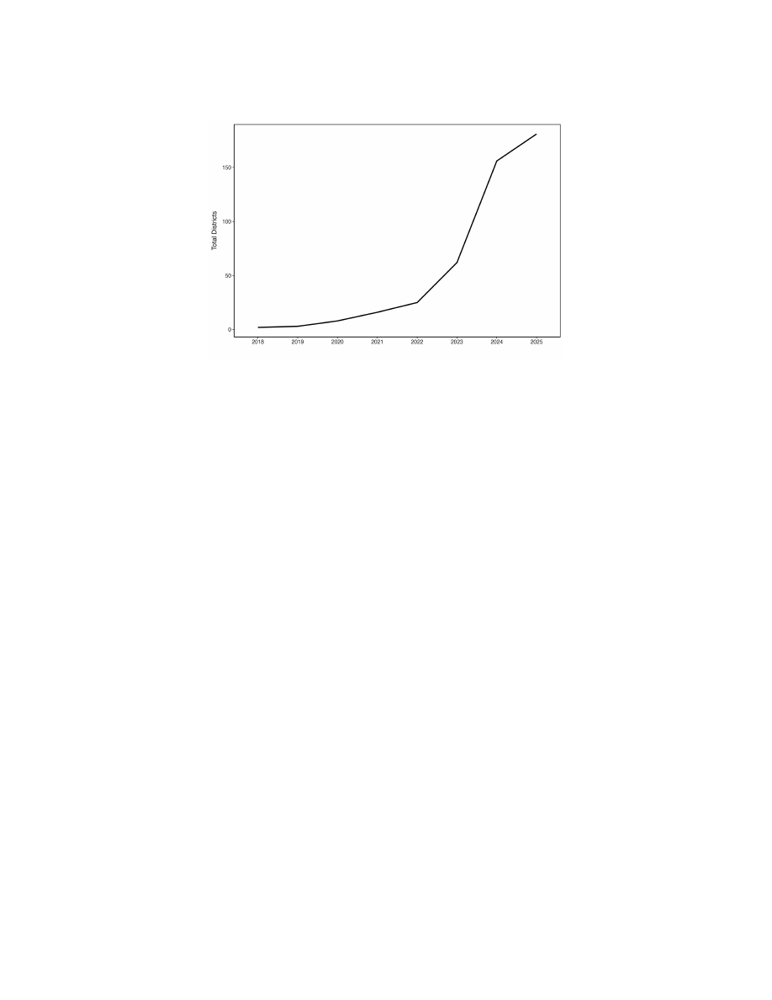
Figure 1: Cumulative districts adopting 4DSW in Texas, by school year.
Notes
: The figure above shows the cumulative number of districts in Texas that had adopted a 4DSW calendar prior
to the start of each school year.
26
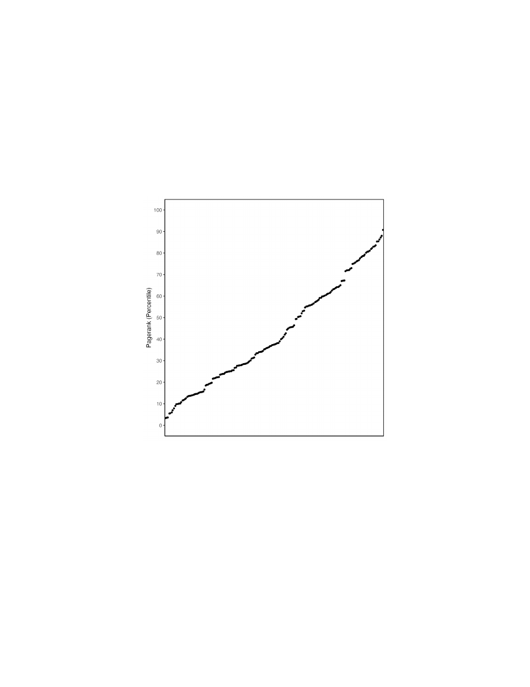
Figure 2: Percentile of PageRank for each 4DSW district in Texas.
Notes:
The figure above plots the percentile corresponding to each 4DSW district’s Transfer PageRank value. The
figure uses a cumulative PageRank estimated from SY 2012 to SY 2025. This measure sums the total number of
teachers entering and leaving each district to and and from every other district in Texas over the 13-year period and
estimates a rank based on the aggregate flows.
27
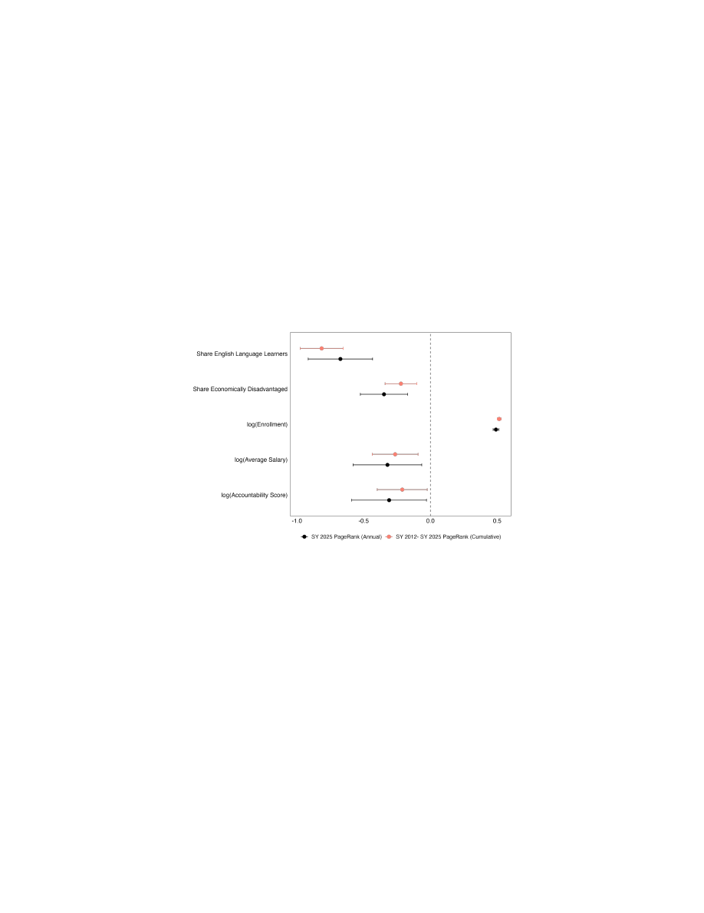
Figure 3: Estimated elasticities and semi-elasticities of Transfer PageRank with respect to other
measures of district attractiveness.
Notes
: The figure above displays coefficients and 95% confidence intervals from a regression of log
(
PageRank
)
on
other district factors. Accountability scores, average salaries, enrollment, and shares of economically disadvantaged
students and English language learners are calculated as of SY 2025.
28
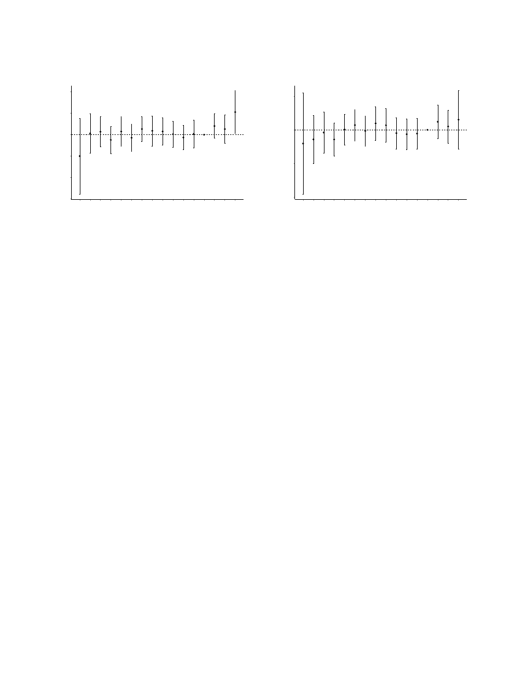
Figure 4: Event study estimates of the effect of 4DSW adoption on district PageRank percentile.
−30
−20
−10
0
10
20
−13
−12
−11
−10
−9
−8
−7
−6
−5
−4
−3
−2
−1
0
1
2
(a) Total PageRank
−20
−10
0
10
−13
−12
−11
−10
−9
−8
−7
−6
−5
−4
−3
−2
−1
0
1
2
(b) Transfer PageRank
Notes
: The figures above displays coefficients and 95% confidence intervals for effects of of 4DSW adoption on the
percentile of a district’s PageRank, comparing Total PageRank and Transfer PageRank. Estimates compare rural
4DSW adopters to a control group of rural non-adopters.
29
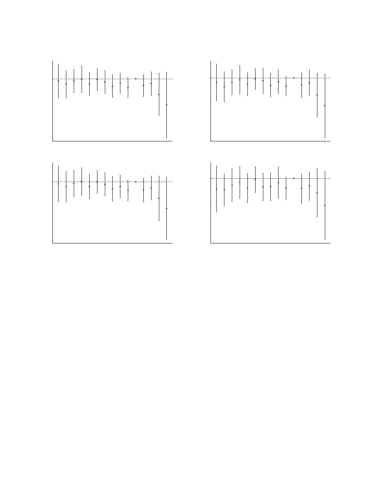
Figure 5: Event study estimates of the effect of 4DSW adoption on school district turnover.
−0.15
−0.10
−0.05
0.00
−12
−11
−10
−9
−8
−7
−6
−5
−4
−3
−2
−1
0
1
2
(a) Rural Control Group
−0.15
−0.10
−0.05
0.00
−12
−11
−10
−9
−8
−7
−6
−5
−4
−3
−2
−1
0
1
2
(b) All District Control Group
−0.15
−0.10
−0.05
0.00
−12
−11
−10
−9
−8
−7
−6
−5
−4
−3
−2
−1
0
1
2
(c) Never-Adjacent Control Group
−0.10
−0.05
0.00
−12
−11
−10
−9
−8
−7
−6
−5
−4
−3
−2
−1
0
1
2
(d) Full 4DSW Only (No Hybrid)
Notes
: The figures above displays coefficients and 95% confidence intervals for effects of 4DSW adoption on school
district turnover. Panels (a) through (c) vary the control group as specified in the caption, while Panel (d) removes
all districts with a hybrid 4DSW schedule from the control group.
30
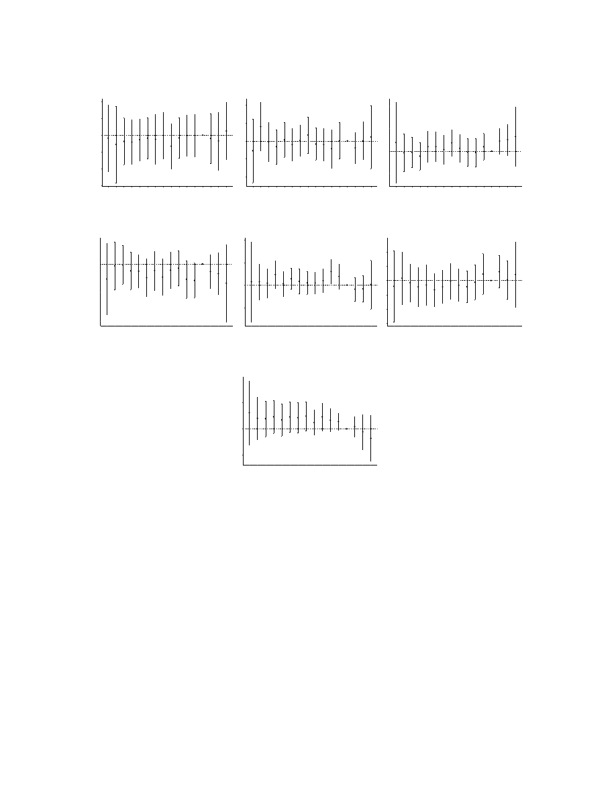
Figure 6: Event study estimates for teacher sorting outcomes.
−0.06
−0.04
−0.02
0.00
0.02
0.04
−13
−12
−11
−10
−9
−8
−7
−6
−5
−4
−3
−2
−1
0
1
2
(a) Cohort Share with No
Degree
−0.10
−0.05
0.00
0.05
0.10
−13
−12
−11
−10
−9
−8
−7
−6
−5
−4
−3
−2
−1
0
1
2
(b) Cohort Share with
Advanced Degree
−0.1
0.0
0.1
0.2
−13
−12
−11
−10
−9
−8
−7
−6
−5
−4
−3
−2
−1
0
1
2
(c) Share of Cohort from
Other Districts
−0.2
−0.1
0.0
−13
−12
−11
−10
−9
−8
−7
−6
−5
−4
−3
−2
−1
0
1
2
(d) Share of Cohort from
Alternate Pathways
−0.1
0.0
0.1
0.2
−13
−12
−11
−10
−9
−8
−7
−6
−5
−4
−3
−2
−1
0
1
2
(e) First-Time Teacher Share of
Cohort
−3
−2
−1
0
1
2
−13
−12
−11
−10
−9
−8
−7
−6
−5
−4
−3
−2
−1
0
1
2
(f) Cohort Average Years of
Experience
−1
0
1
−13
−12
−11
−10
−9
−8
−7
−6
−5
−4
−3
−2
−1
0
1
2
(g) Student-Teacher Ratio
Notes
: The figures above displays coefficients and 95% confidence intervals for the effect of 4DSW adoption on each
of my 7 sorting outcomes. Estimates compare rural 4DSW adopters to a control group of rural non-adopters.
31
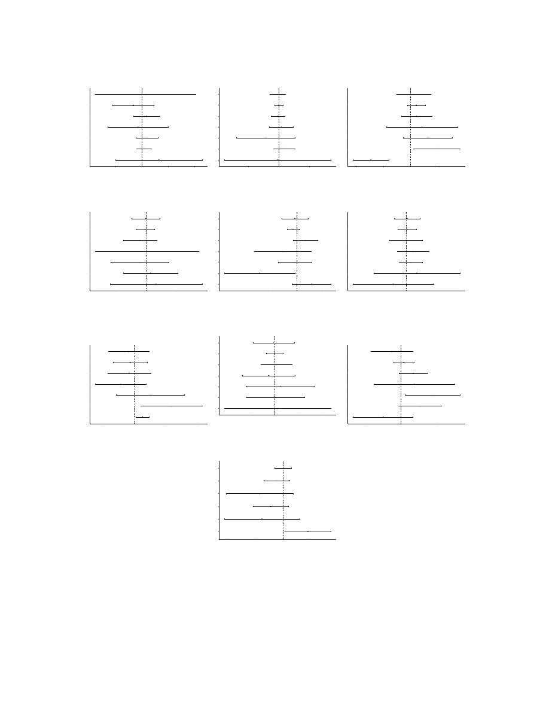
Figure 7: Effect of the 4DSW by adoption cohort.
2018
2020
2021
2022
2023
2024
2025
−0.05
0.00
0.05
0.10
(a) Cohort Share with No
Degree
2018
2020
2021
2022
2023
2024
2025
−0.3
0.0
0.3
(b) Cohort Share with
Advanced Degree
2018
2020
2021
2022
2023
2024
2025
−0.4
−0.2
0.0
0.2
0.4
(c) Share of Cohort from
Other Districts
2018
2020
2021
2022
2023
2024
2025
−1.0
−0.5
0.0
0.5
1.0
(d) Share of Cohort from
Alternate Pathways
2018
2020
2021
2022
2023
2024
2025
−0.4
−0.2
0.0
0.2
(e) First-Time Teacher Share of
Cohort
2018
2020
2021
2022
2023
2024
2025
−15
−10
−5
0
5
10
15
(f) Cohort Average Years of
Experience
2018
2020
2021
2022
2023
2024
2025
−1
0
1
2
(g) Student-Teacher Ratio
2018
2020
2021
2022
2023
2024
2025
−100
−50
0
50
100
(h) Percentile Transfer
PageRank
2018
2020
2021
2022
2023
2024
2025
−20
0
20
(i) Percentile Total PageRank
2018
2020
2021
2022
2023
2024
−0.2
−0.1
0.0
0.1
(j) District Turnover Rate
Notes
: The figures above displays coefficients and 95% confidence intervals of 4DSW adoption on each outcome
aggregated over time, for each treatment cohort. Estimates compare rural 4DSW adopters to a control group of
rural non-adopters.
32
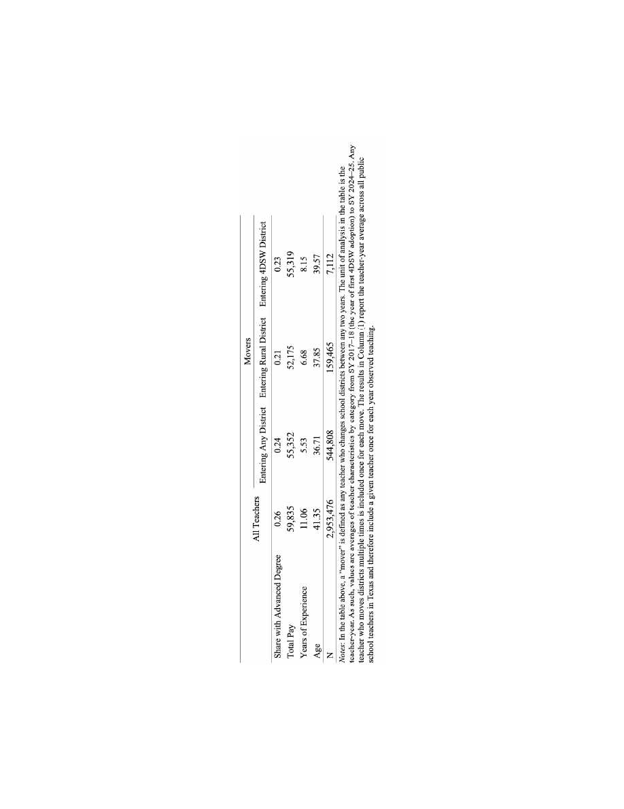
Table 1: Texas teacher characteristics, SY 2017-18 to SY 2024-25.
33
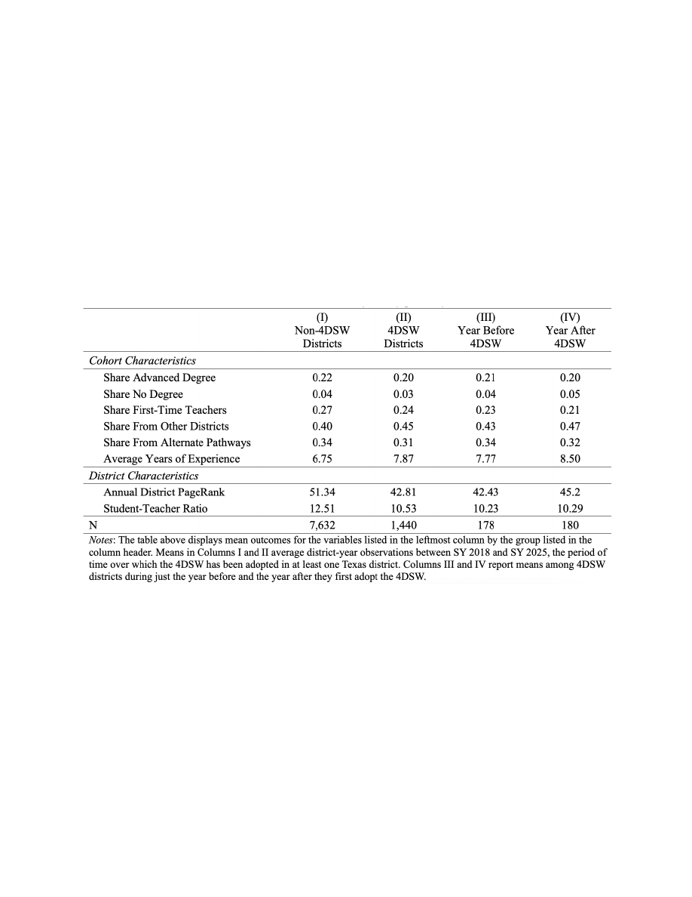
Table 2: Mean outcomes for 4DSW and non-4DSW districts.
34
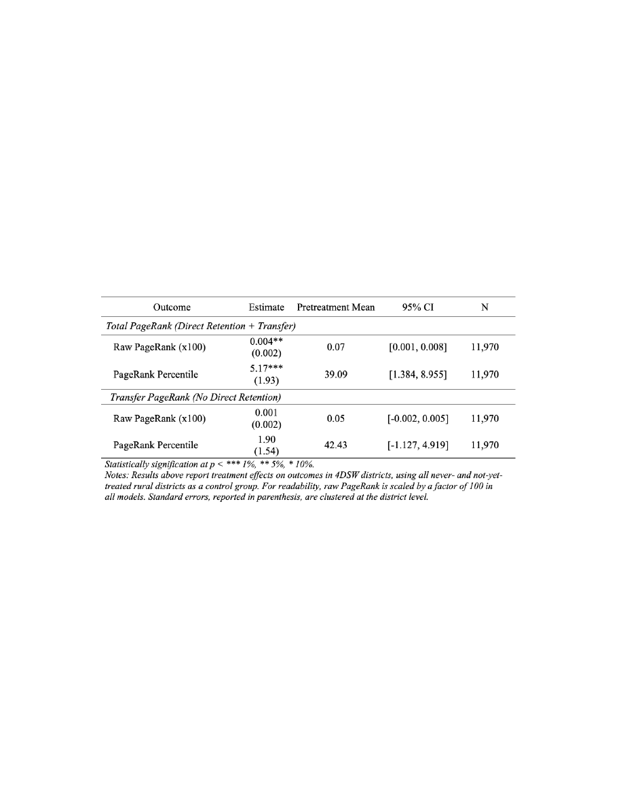
Table 3: The effect of 4DSW adoption on district PageRank.
35
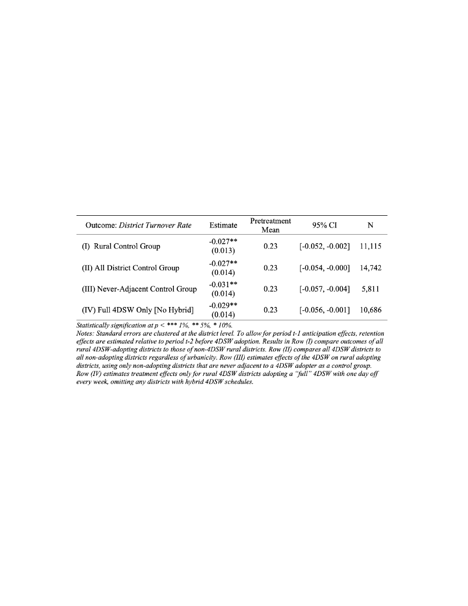
Table 4: The effect of 4DSW adoption on district turnover rates.
36
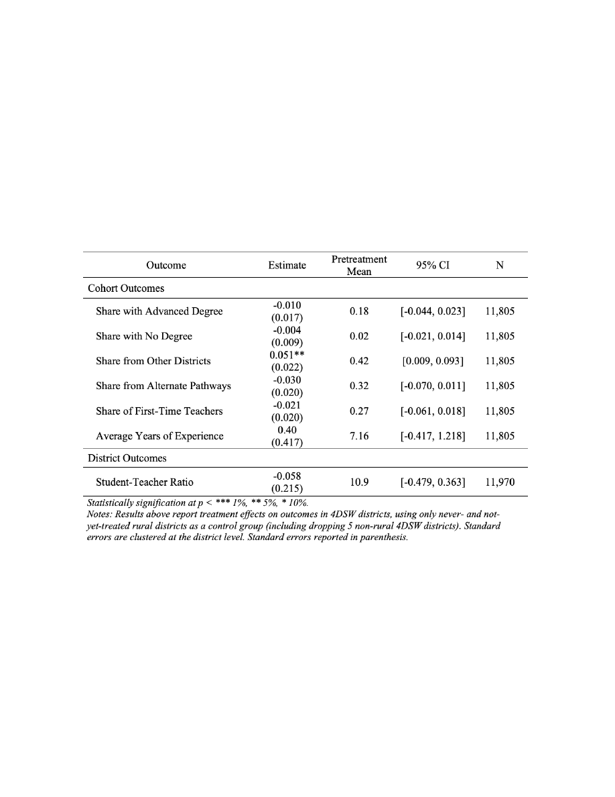
Table 5: The effect of 4DSW adoption on teacher sorting outcomes.
37

A1 Teacher-Level Retention Analysis
In this section, I discuss my supplementary teacher-level retention analysis. As in my district-level
analysis, I allow for one period of anticipation effects to account for the announcement of the
4DSW coming during the preceding school year. My measure of retention is a binary indicator
for whether a teacher leaves their current district at the end of school year
t
. Because teachers
who work in 4DSW have different pretrends than teachers who are never exposed to the policy,
my teacher-level analysis compares teachers currently working in 4DSW districts to teachers
who will work in 4DSW districts in the future (not-yet-treated control group,
N
= 127
,
480
).
A teacher is treated beginning during their first year of employment in a 4DSW district and is
omitted from the sample once they leave a 4DSW, if ever (i.e. if treatment turns off, which is
not permitted in the C&S estimator design).
The approach here includes both unit (teacher) and time (year) fixed effects. I account for
time-invariant district characteristics by residualizing my outcome on district fixed effects before
estimating treatment effects, since the software used to implement the C&S method does not
permit a third level of fixed effects. Standard errors are clustered at the teacher level.
I find that the 4DSW reduces a teacher’s probability of exiting the district by 3.5 p.p. (s.e.
0.008) from a pretreatment mean value of 16%. However, the effect follows an interesting
trajectory over time. I estimate an event study model for this analysis in, plotting the results in
panel (a) of Figure
A1
. There is what could be an anticipation effect at
t
=
−
1
: teacher turnover
spikes by just under 5 p.p. in the period before treatment, then drops substantially after the
4DSW begins. This is consistent with some teachers sorting into 4DSW districts in anticipation
of the policy, before staying put for subsequent years. In other words, this may be evidence of a
recruitment effect: teachers who are not in a 4DSW district in
t
−
1
hear about the policy and
sort into 4DSW districts, mechanically increasing their turnover rate in the pre-period.
1

Figure A1: The effect of 4DSW adoption on teacher’s probability of exiting district.
Notes
: The figures above displays coefficients and 95% confidence intervals for the effect of 4DSW adoption on
a teacher’s probability of exiting their current district. Estimates compare teachers currently working in 4DSW
districts to those who work in districts that have not yet adopted the policy.
2
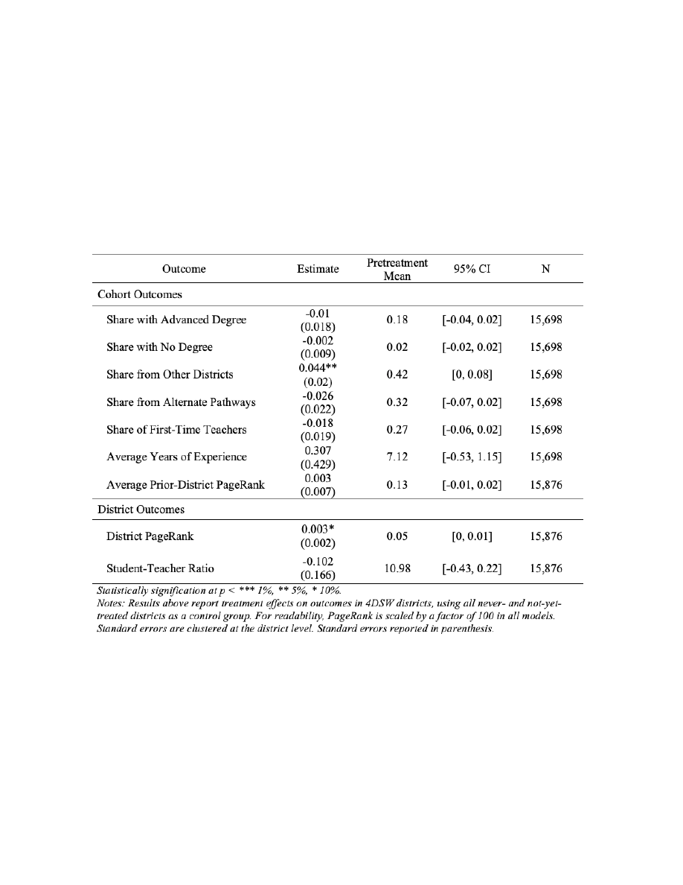
Table A1: The effect of 4DSW adoption on teacher sorting outcomes, all not-yet-treated district
control group.
3
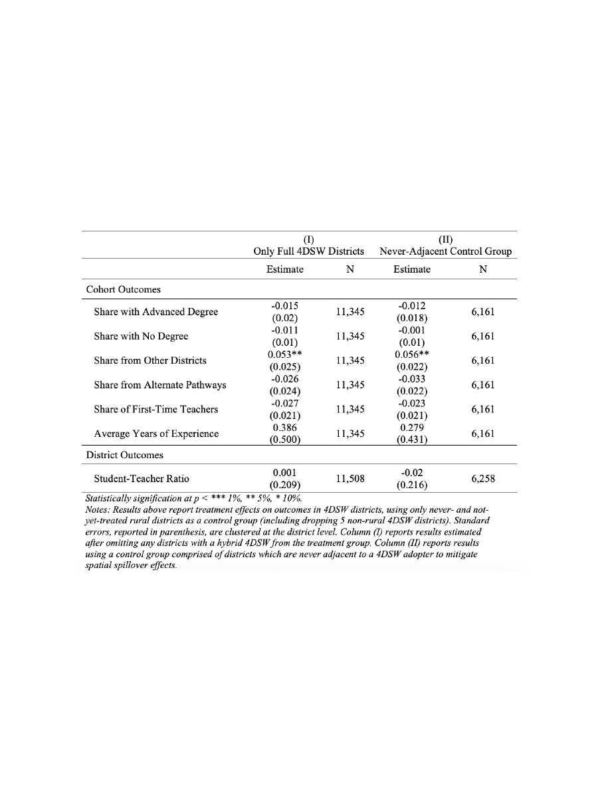
Table A2: The effect of 4DSW adoption on teacher sorting outcomes, omitting hybrid districts
and adjacent districts.
4
Document Outline